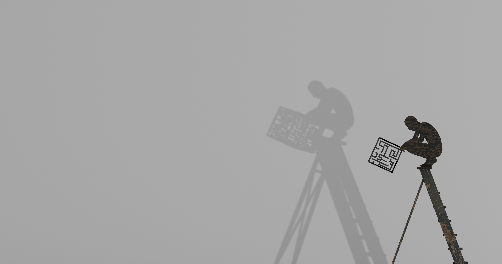
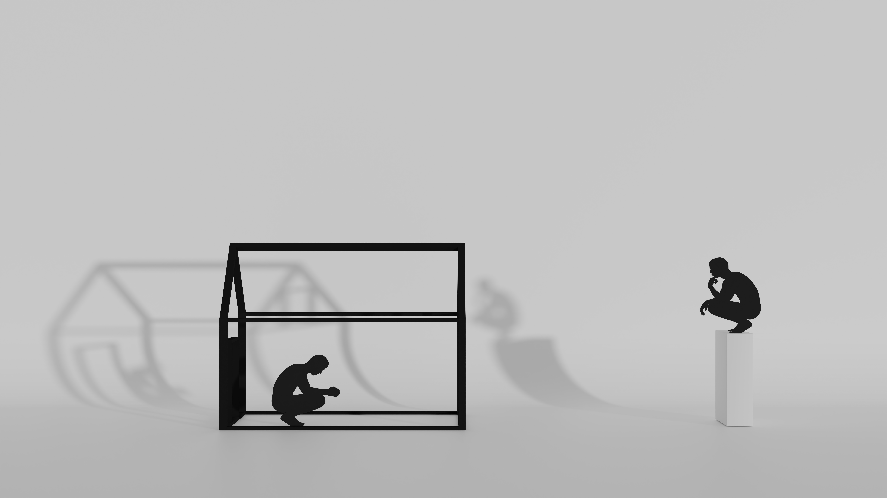

Prints
Limited edition prints

A figure perches at the top of a stepladder, absorbed in a maze that may or may not have a solution. Behind it the shadow spreads — ladder and figure thrown vast against the wall, the problem magnified beyond any reasonable scale.
This is the condition the work keeps returning to: the small concentrated self, the enormous projected consequence. Effort rendered in dark-grained wood and cast light.
Limited edition archival print. Enquire by email for sizing, edition details, and pricing.

Two figures occupy different positions: one enclosed within the structure, absorbed in thought or action; the other elevated above it, watching from a distance. Between them, shadows stretch across the wall, creating larger and less certain versions of what we see.
The image considers the space between doing, thinking and observing. To act is to become part of the problem; to think is to step outside it; to observe is to see the consequences from a different position. Yet each position casts its own shadow.
The figures may be separate, but they could also be different states of the same person — the self that acts, the self that thinks, and the self that stands back and watches.
Limited edition archival print. Enquire by email for sizing, edition details, and pricing.


Enquiries about all print availability, sizing, and editions are welcome by email.